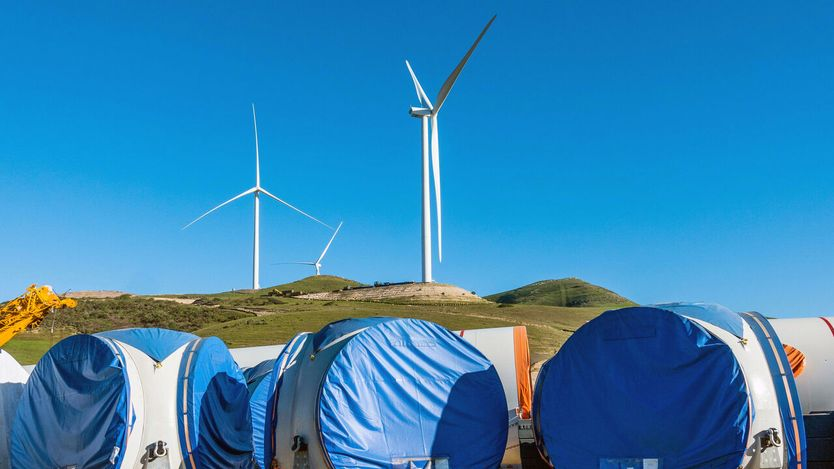
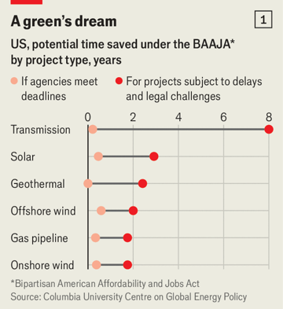
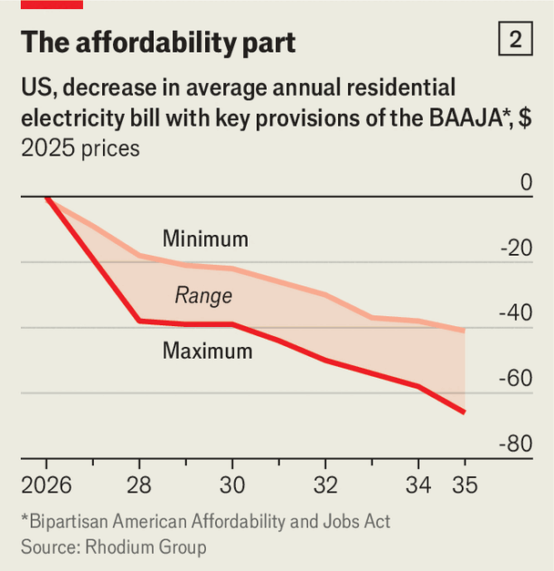

国会把矛头对准了「建不成东西」的繁文缛节
Congress takes aim at the red tape that makes it hard to build
但民主党会支持放松监管吗？

- 美国想在超级智能、电网和制造业上追赶，真正的瓶颈却是审批：一个矿从申请到动工平均要八到九年，电厂和输电线路也要五到六年。
- 参议院已通过的《两党美国可负担性与就业法案》要给审批装上时限、压缩环境评估、限制诉讼，变数在众议院的民主党人，成败在此。
- 反直觉之处在于最受益的是清洁能源：智库测算十年内风光储新增装机多三成六，到 2035 年居民电价实际水平低百分之三到四。
- 环保团体仍然反对，因为天然气管道一并松绑、司法监督被削弱；民主党内部「丰裕议程」与「反去监管」两派因此正面相撞，短期内难有共识。
美国政客的目标很大。他们想在与中国的超级智能竞赛中取胜，想让电网变绿，还想让制造业回流，这里只举几例。要实现这些雄心，就得建大量东西，从数据中心到输电线路。但开发商面对的繁文缛节太多，光是拿到开工许可，往往就要耗上几年。
一项正在国会缓慢推进的法案想改变这一点，办法是简化基础设施项目的审批流程。这部《两党美国可负担性与就业法案》（Bipartisan American Affordability and Jobs Act，简称 baaja）已在参议院通过，并得到特朗普的支持，但在众议院前景未定。许多民主党人反对。对他们来说，这部法案是对其增长与降物价承诺的一次检验——这两件事正是该党中期选举的竞选主张。
多数议员都同意，在美国建东西太难。咨询公司麦肯锡 2025 年发布的估算显示，矿业项目拿到联邦许可平均需要八到九年；油气管道六到七年；发电五到六年；交通基础设施四到五年；制造业两到三年。难怪美国几乎没建成什么高铁，电网扩容也跟不上需求暴涨。

baaja 会让各类基础设施更容易开工，从可能降低美国对中国关键矿产依赖的矿山，到提供制造业岗位的工厂。做法是简化审批程序、给监管机构设定期限、改善跨部门协调、限制那些拖住项目的法律诉讼。其中关键一条是削弱《国家环境政策法》（NEPA）的杀伤力——该法要求涉及联邦土地、资金或监管批准的项目做环境评估，很多开发商视其为心头大患。
NEPA 下最详尽的审查通常要四年以上。该法允许项目反对者以「审查不充分」为由起诉阻止。为了预防诉讼，环境评估写得极其详尽，动辄数百页。即便如此，官司仍然常见。一项研究发现，需要这类审查的项目中，约三分之二的光伏项目、一半的管道项目、三分之一的风电项目遭遇过法律挑战。即便反对者败诉，诉讼平均也会让项目延后 18 个月。按 baaja 的安排，法院仅因审查不充分就否决项目的权力将受限，要先给项目方补救机会。
许多环保人士反对 baaja。他们承认需要改革审批，但认为这部法案的取舍——包括给天然气管道更宽松的审批、削弱司法监督——不值得。南方环境法律中心的阿曼达·加西亚说，baaja「与选民刚刚在选举中告诉我们的完全相反……他们想要更多参与，想在影响日常生活的决策中有更多发言权」。在一次绿色阵营的策略电话会上（录音被泄露给 Punchbowl News），有人说这部法案「不该只按净排放来评判」，还要看「生态与社区价值」。
这种尴尬的站位，或许反映了另一个发现：baaja 其实对气候有利。审批瓶颈对清洁电力的伤害格外大。排队等待接入拥挤电网的项目，绝大多数是可再生能源。智库气候与能源解决方案中心（C2ES）的模型显示，在 baaja 之下，未来十年新增的风电、光伏和储能装机将比现行审批制度多 36%，等待时间也会缩短（见图 1）。研究机构荣鼎集团的另一项研究估算，与原本的预测水平相比，该法案到 2040 年可使美国年度温室气体排放最多减少 1.48 亿吨，即 4%。
baaja 还想让急需的电网升级更容易。美国实际上有三大电网（「互联系统」）和拼盘式的区域电力市场。跨区输电开发商 Grid United 的阿什莉·康说，这些系统的运营方彼此不通气，也不联合规划。该公司正在建「北平原连接线」，一条从蒙大拿州到北达科他州、长 420 英里的高压线，将连接两个电网、跨越三个电力市场、涉及十家电力公司。为了拿到各方同意，公司只能一家一家去谈。

按 baaja 的安排，相关方将在项目一开始就被拉到一起，长距离线路的成本按受益大小分摊。「现在根本没有这样的流程，」康女士说。法案还会强化联邦监管机构推翻州级阻挠决定的权力。绿营也该为此高兴。C2ES 估计，该法案将使跨区输电容量增加一倍以上，让远离风光电站的消费者用上更多清洁电力。
通过增加电力供应，并强制数据中心为电网升级支付与其用量相称（甚至更多）的费用，法案应能压低电价。荣鼎集团称，到 2035 年，居民电费按实际价格计算可能比现行政策下低 3% 到 4%（见图 2）。
于是民主党必须决定自己的优先级。党内许多人拥抱「丰裕议程」，即美国需要更快地建东西，以缓解短缺、压低成本。但也有人对放松监管持怀疑。接近 baaja 谈判的人士乐观地认为，会有足够多的民主党人与共和党人一起支持它。但即便法案成法，民主党内部这场更大的争论也远未尘埃落定。■